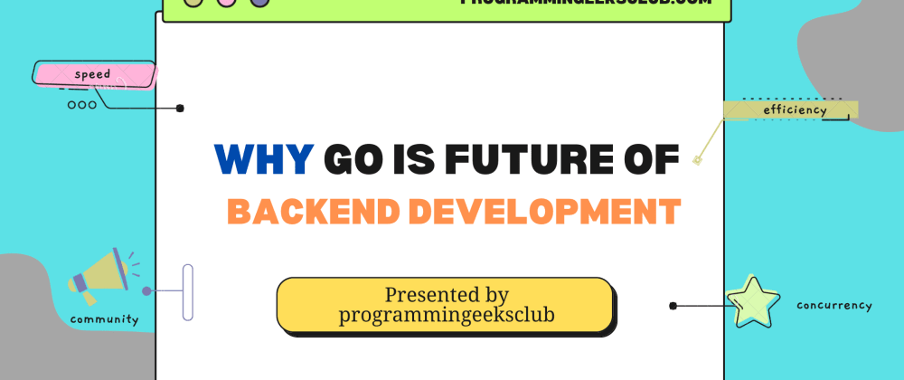

近年来，Go 语言的流行度迅速增加。 Go 最初由 Google 开发，已迅速成为最流行的后端开发语言之一，尤其是在分布式系统和微服务开发方面。在本文中，我们将讨论 Go 是后端开发未来的原因。
Go，也称为 Golang，是谷歌于 2007 年开发的一种开源编程语言，作为一种强大而高效的后端开发语言，近年来受到越来越多的欢迎。它受欢迎的主要原因之一是它的性能和速度。
Go 成为一种流行的后端开发编程语言的主要原因之一是它的速度和效率。
Go 从一开始就被设计成一种快速高效的编程语言，使其成为构建可处理大量请求的后端系统的理想选择。
Go 通过多种功能实现其速度和效率，包括其内置的垃圾收集器、低级内存管理和编译器优化。这些特性使 Go 能够在不牺牲安全性或生产力的情况下实现出色的性能。
Go 中的垃圾收集器经过高度优化并与程序并发运行，这意味着它不会导致应用程序暂停。这对于需要处理大量请求并且必须始终保持响应的后端系统来说至关重要。
Go 的低级内存管理是有助于其速度和效率的另一个因素。与许多其他高级编程语言不同，Go 允许开发人员直接控制内存分配和释放。这种控制级别使开发人员能够优化其应用程序中的内存使用，并避免与其他语言中的垃圾收集相关的开销。
Go 编译器也经过高度优化，包括转义分析和内联等功能，可以显著提高生成代码的性能。与 Python 或 Ruby 等其他高级编程语言相比，这些优化使 Go 能够实现更快的启动时间和整体性能。
除了这些特性之外，Go 还具有轻量级语法，可以轻松编写干净简洁的代码。这种简单性使开发人员能够更快地编写代码并减少出错的可能性，从而产生更高效和可靠的后端系统。
总体而言，Go 的速度和效率使其成为构建可处理大量请求的高性能后端系统的绝佳选择。其优化的垃圾收集器、低级内存管理和编译器优化，连同其轻量级语法，为开发人员提供了构建快速可靠系统所需的工具。
C并发性和可扩展性是任何现代后端系统的两个最关键的特性。可扩展的后端应该能够在不影响性能的情况下处理越来越多的请求，而并发后端可以同时执行多个任务，从而提高整体效率。
首先我们先了解一下并发：
Go 的设计初衷是为了支持并发性，使其成为构建并发应用程序和服务器的最流行的编程语言之一。 Go 的并发方法基于 goroutines 的概念，goroutines 是允许同时执行多个任务的轻量级线程。
下面是 goroutines 在 Go 中如何工作的例子：
package main
import "fmt"
func main() {
go func() {
fmt.Println("Goroutine 1")
}()
go func() {
fmt.Println("Goroutine 2")
}()
time.Sleep(time.Second)
}在此示例中，我们定义了两个 goroutine，它们将消息打印到控制台（终端）。添加 time.Sleep(time.Second) 语句是为了让主线程保持活动状态，直到两个 goroutine 都完成执行。当我们运行这个程序时，我们会看到两条消息都打印到控制台上。
Goroutine 2
Goroutine 1代码的输出顺序不是固定的，因为它是并发行为。
这只是一个简单的示例，但它展示了 goroutine 的强大功能。 Goroutine 是轻量级的，因此我们可以创建数千个 Goroutines 而不会显着影响性能。这使得 Go 成为构建并发应用程序的绝佳选择。
Go 的并发方法使其成为构建可扩展后端系统的绝佳选择。在 Go 中，我们可以使用与 goroutines 相同的方法来构建可扩展的后端系统。我们可以创建多个 goroutines 来处理请求，保证后端可以处理大量的请求而不影响性能。
这是我们如何在 Go 中构建可扩展后端的示例：
package main
import "net/http"
func main() {
http.HandleFunc("/", func(w http.ResponseWriter, r *http.Request) {
go func() {
// Handle request
}()
})
http.ListenAndServe(":8080", nil)
}在此示例中，我们创建了一个可以处理请求的简单 HTTP 服务器。当收到请求时，我们创建一个新的 goroutine 来处理它。这确保我们可以同时处理多个请求，使我们的后端系统具有高度可扩展性。
Go 独特的并发性和可扩展性方法使其成为构建现代后端系统的绝佳选择。它对 goroutines 和轻量级线程的支持使得构建高并发应用程序变得容易，而它的可扩展性使其成为构建大规模后端系统的理想选择。
Go 的简单性和易用性使其成为经验丰富和缺乏经验的开发人员的绝佳选择。其内置的垃圾收集、对并发和网络的支持以及简单的部署选项使其成为构建高性能 Web 应用程序和服务的理想选择。
总体而言，Go 是一种用于构建现代后端系统的优秀语言，其日益流行证明了其解决后端开发中常见问题的独特方法。如果你正在寻求构建一个高度并发和可扩展的后端，Go 绝对值得考虑。
微服务是构建现代后端系统的流行架构模式。微服务背后的想法是将大型单体应用程序分解为更小的、可独立部署的服务，这些服务可以通过 API 相互通信。这种方法提供了几个好处，包括改进的可伸缩性、敏捷性和弹性。
由于其简单性、性能和对并发的支持，Go 是一种用于构建微服务的优秀语言。在本节中，我们将探讨 Go 独特的微服务和部署方法如何使其成为构建现代后端系统的绝佳选择。
在 Go 中创建微服务相对简单。我们可以将单独的服务创建为单独的包或可执行文件，并且每个服务都可以通过 API 与其他服务进行通信。这种方法使得独立测试和部署单个服务变得容易，从而允许快速开发和部署新功能。
这是一个简单的 Go 微服务示例：
package main
import (
"encoding/json"
"fmt"
"net/http"
)
func main() {
http.HandleFunc("/ping", func(w http.ResponseWriter, r *http.Request) {
response := map[string]string{"message": "Hello, World!"}
json.NewEncoder(w).Encode(response)
})
http.ListenAndServe(":8080", nil)
}在此示例中，我们创建了一个简单的微服务，它返回一个 JSON 响应，其中包含一个值为“Hello, World!”的“message”字段。然后我们使用 http 包来监听端口 8080 上的传入请求。这个微服务可以独立部署和扩展，允许根据需要快速开发和部署新功能。
由于语言支持交叉编译和静态链接，在 Go 中部署微服务相对容易，这意味着我们可以为特定平台编译我们的微服务并将它们作为独立的可执行文件分发，从而很容易将它们部署到各种环境。
以下是我们如何为 Linux 环境编译和部署微服务的示例：
$ GOOS=linux GOARCH=amd64 go build -o hello-world-linux-amd64
$ scp hello-world-linux-amd64 user@server:/path/to/deployment/folder在此示例中，我们使用 GOOS 和 GOARCH 环境变量来指定我们要为在 AMD64 架构上运行的 Linux 环境编译我们的微服务。然后我们使用 go build 命令编译我们的微服务并将其保存为可执行文件。最后，我们使用 scp 命令将可执行文件复制到服务器上的部署文件夹中。